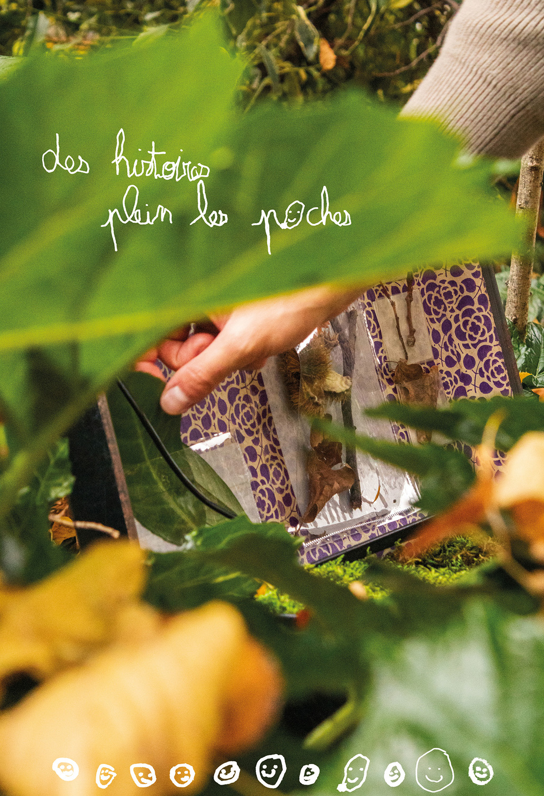
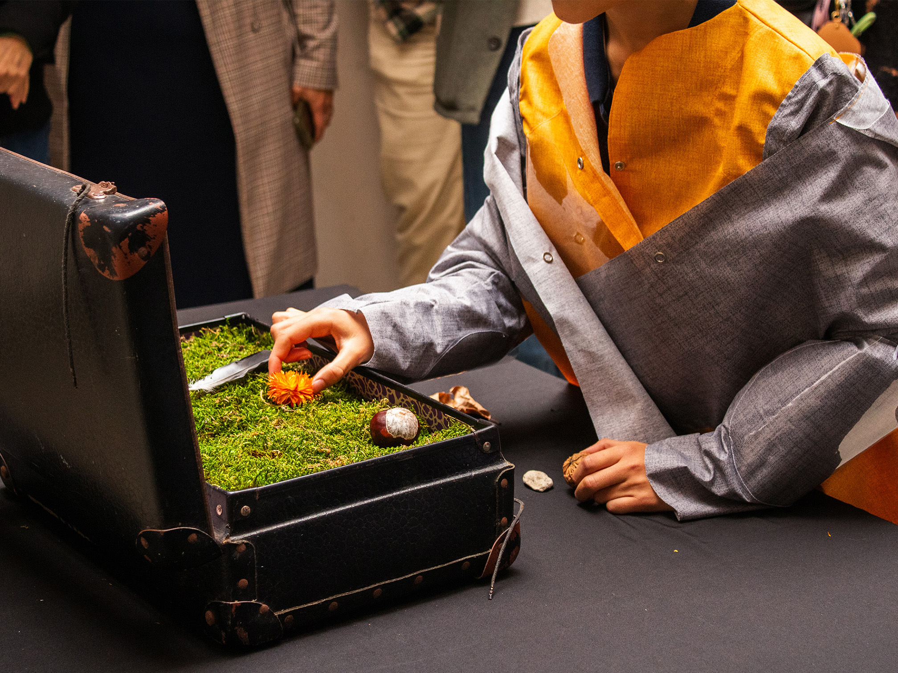
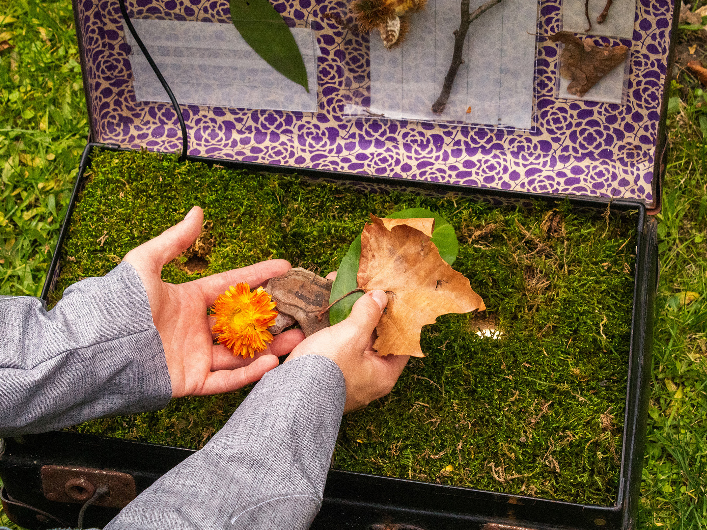
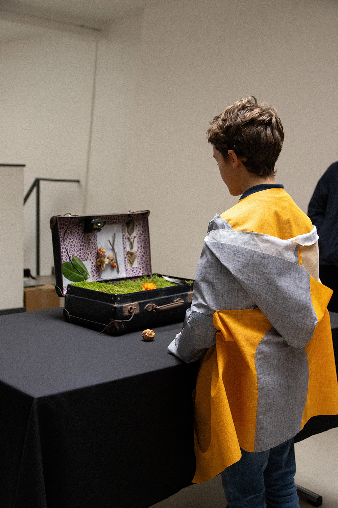

En partenariat avec le Lab-Ah du GHU Paris, nous avons conçu une expérience sensorielle immersive destinée aux enfants.
Inspirés par les jardins du GHU, « Des histoires pleins les poches » propose une rencontre entre nature, synesthésie et imaginaire.
Lors d'une promenade munis de leur « cape à trésors », les enfants sont invités à collecter des éléments naturels qu’ils conservent précieusement dans leurs poches. L'expérience se poursuit ensuite au sein de l'hôpital grâce à une « valise aux histoires » interactive. Ce dispositif autonome, pourvu d'une intelligence artificielle, reconnaît les objets déposés par l'enfant pour générer des histoires et ambiances sonores. Les enfants deviennent alors libres d’explorer, d’écouter et d’inventer des récits où la nature devient elle-même la narratrice.



